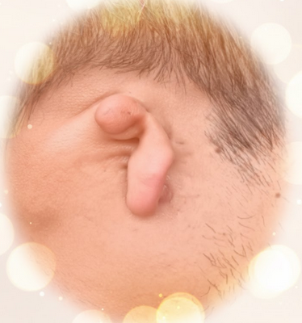
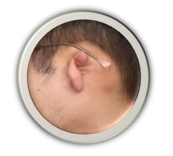
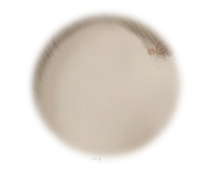

Es una malformación congénita del pabellón auricular que va desde aurícula pequeña hasta ausencia total (anotia). A menudo se asocia a atresia del conducto auditivo externo y hipoacusia Micro = Pequeño / Otia = Oreja

La microtía consta de tres grados basándose en la forma del pabellón auricular y la formación de el oído interno.
Tipo A (Estenosis)
Conducto auditivo estrecho, membrana visible, y huesecillos poco móviles. Con una hipoacusia leve a moderada.

Tipo B (Atrecia Parcial)
Conducto incompleto, membrana pequeña o ausente, huesecillos alterados. Con una hipoacusia Moderada a Severa

Tipo C (Atresia Total)
Conducto cerrado completamente, sin membrana ni estructura interna formada. Con una hipoacusia Severa.

El tratamiento suele ser el apoyo con prótesis auditivas, operación coclear.
Lo estético no es funcional.
Restaurar la forma externa del oído y la simetría facial. Es un procedimiento solo estético, no mejora la audición
TIPOS DE RECONSTRUCCIÓN:
- Autóloga: con cartílago costal del propio paciente (resultado natural, requiere cirugía).
- Sintética: con implante (Medpor/Su-Por), menor invasión, aspecto simétrico.
- Protésica: oreja de silicona personalizada, sincirugía, con adhesivo o imán.
La microtía se puede diagnosticar a partir del quinto mes de gestación en la ecografía pero la malformación ocurre en los primeros tres meses de gestación.
Referencias
La fuente oficial de la OMS sobre salud auditiva está disponible en su página dedicada
a la sordera y pérdida de la audición.
- Sordera y pérdida de la audición – Organización Mundial de la Salud (OMS).
- Cuidado del oído y la audición – Organización Mundial de la Salud (OMS).
- Salud auditiva – Organización Panamericana de la Salud / OMS (OPS/OMS).